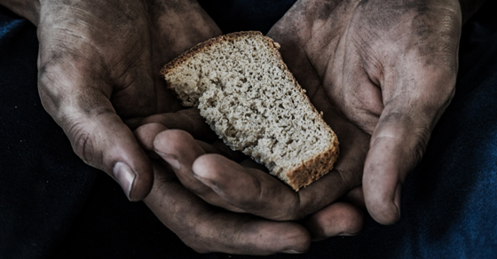

Missão Contra a Fome
A nossa missão contra a fome consiste em aujdar os necessitados por meio da distribuição de alimentos nos templo da Assembleia de Deus.

Evangelização no Exterior
Aqui entra o texto detalhado sobre a missão de evangelização no exterior. Quem são os missionários apoiados, quais países, e o impacto desse trabalho para o Reino de Deus.